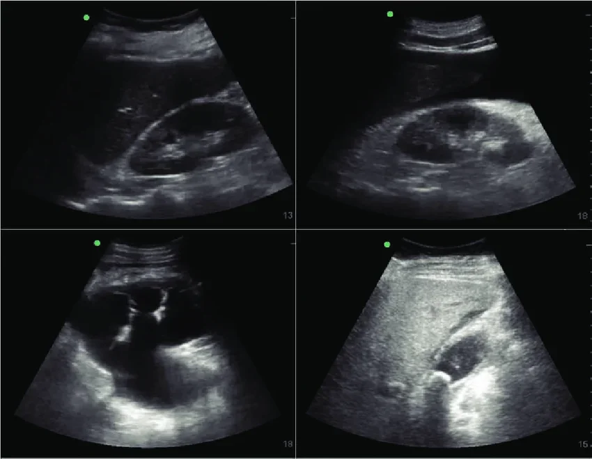

Rekam Medis Elektronik
29 Okt 2026 · Poli Penyakit Dalam · DPJP dr. Aditya Pranata, Sp.PD
Data SATUSEHAT Tanggal sistem 31 Okt 2026 · Sabtu
FINAL Verifikasi: Lengkap SATUSEHAT SAT-2026-000014
Catatan SOAP
dr. Aditya Pranata, Sp.PD · 29 Okt 2026 09:15 · final 29 Okt 2026 10:15- Subjective
- Demam, disuria, nyeri pinggang kanan 2 hari.
- Objective
- S 38,0. Nyeri ketok CVA kanan (+).
- Assessment
- Pielonefritis akut
ICD-10 N10 · Pielonefritis akut - Plan
- Rawat inap, antibiotik IV (hindari cotrimoxazole - alergi), urinalisis, USG ginjal.
- Tindak lanjut
- Rawat Inap
Hasil Penunjang
Lab · Urinalisis Lengkap Diterbitkan
Hasil: Leukosit urin 25-30/LPB (+3); nitrit (+); bakteri (+)
Rujukan: Kuning jernih; pH 4,5-8; protein & glukosa negatif; leukosit 0-5/LPB · Validasi dr. Helena Wijaya, Sp.PK
Hasil: Leukosit urin 25-30/LPB (+3); nitrit (+); bakteri (+)
Rujukan: Kuning jernih; pH 4,5-8; protein & glukosa negatif; leukosit 0-5/LPB · Validasi dr. Helena Wijaya, Sp.PK
Radiologi · CT Scan Abdomen · Dengan kontras Order Baru
Ekspertise belum terbit · indikasi: Pielonefritis tidak membaik setelah 72 jam antibiotik, suspek abses ginjal kanan · menunggu persetujuan asuransi
Ekspertise belum terbit · indikasi: Pielonefritis tidak membaik setelah 72 jam antibiotik, suspek abses ginjal kanan · menunggu persetujuan asuransi
Radiologi · USG Ginjal & Saluran Kemih Diterbitkan

Perbesar gambarUSG Ginjal & Saluran KemihTerbit 29 Okt 2026 10:15
Temuan
Ginjal kanan berukuran 11,8 x 5,6 cm, sedikit membesar, ekogenisitas korteks meningkat dengan batas kortikomedular kurang tegas. Sistem pelviokalises tidak melebar, tidak tampak batu.
Ginjal kiri ukuran dan ekogenisitas normal, tidak tampak batu maupun pelebaran sistem pelviokalises.
Buli-buli terisi cukup, dinding tidak menebal. Hepar dan kandung empedu dalam batas normal.
Kesan / Kesimpulan
Gambaran pielonefritis akut ginjal kanan. Tidak tampak batu maupun hidronefrosis bilateral.
Dokter Sp. Radiologi: dr. Reza Mahardika, Sp.Rad
Tanda Vital
TD 112/72 mmHg, Nadi 98x/mnt, RR 20x/mnt, Suhu 38 °C, SpO2 98%, BB 58 kg, TB 157 cm (BMI 23.5), Nyeri 5/10
Pengkajian perawat
Terapi
Tindakan: Pemasangan Kateter Urin × 1 Order
Perkembangan Pasien (Perawat)
1 catatanMonitoring 30 Okt 2026 04:15 · Ns. Siti Nurhaliza, S.Kep.
TD 110/70 · N 96 · RR 20 · S 38.2 · SpO2 98%
Demam, nyeri pinggang kanan skala 4.